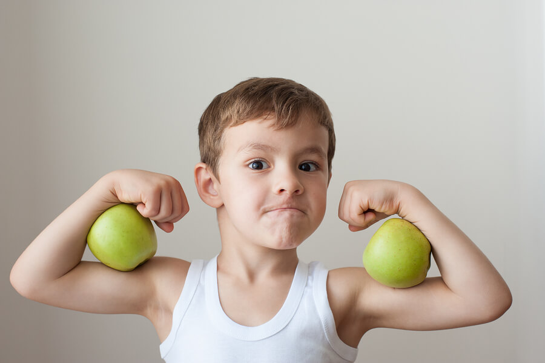
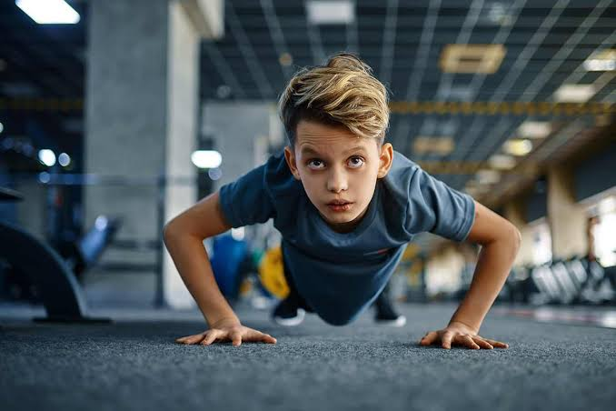
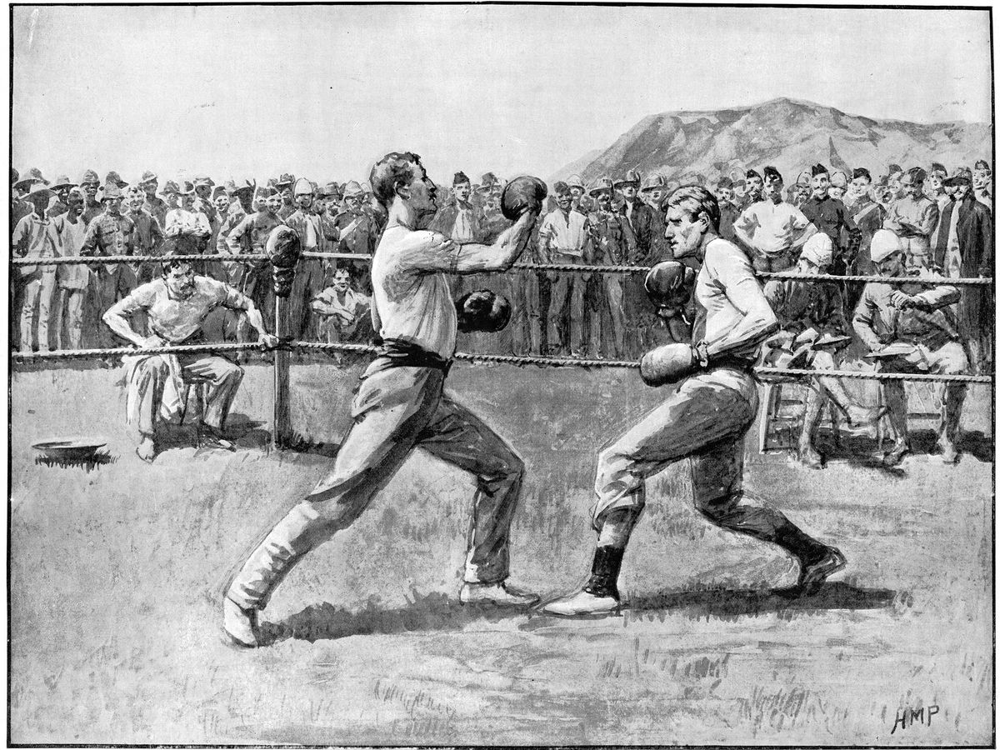

Cuando los niños y los adolecentes se van desarrollando, es posible que pierdan el interés
por las actividades físicas. Entre el colegio, los deberes, los amigos e, incluso, los trabajos a tiempo
parcial, los niños y los adolescentes tienen que hacer malabarismos con tantos intereses y
responsabilidades.
La OMS advierte de que en el mundo el 80% de los niños y niñas y adolescentes
no hace el suficiente ejercicio diario, lo que puede poner en riesgo su salud.
Por eso hay que conocer los beneficios de la actividad física y/o el ejercicio regular ya que ayuda a
los niñosy los adolecentes a sentirse más lleno de energía, a mejorar en concentración y atención, y a
tener un mejor aspecto físico. Y la actividad física y/o el ejercicio regular puede ayudar a los niñosy
los adolecentes a mantener un peso saludable, así como a prevenir enfermedades cardíacas,la diabetes y
otros problemas de salud en el futuro.
El ejercicio ayuda a mejorar el estado de ánimo al liberarneurotransmisores como endorfinas, serotonina y dopamina, los cuales reducen los niveles de estrés, ansiedad y depresión. También ayuda a regular el ritmo circadiano para lograr un sueño más profundo y reparador. A nivel personal, fomenta la disciplina, la constancia y la gestión del tiempo, habilidades útiles en el estudio y el trabajo. En el ámbito social, ayuda a combatir el aislamiento, promoviendo la empatía, el compañerismo y la creación de relaciones interpersonales mediante el trabajo en equipo.

El ejercicio sirve como una herramienta de medicina preventiva que reduce el riesgo de desarrollar enfermedades crónicas como diabetes tipo 2, hipertensión, problemas cardiovasculares, colesterol alto y ciertos tipos de cáncer. Sirve para regular el peso corporal, optimizar el metabolismo, fortalecer la densidad ósea y mantener la masa muscular a lo largo de los años. En niños y adolecentes, sirve para desarrollar la coordinación psicomotriz, el equilibrio y la agilidad. Además, sirve como un canalizador de energía que permite liberar tensiones y mejorar la autorregulación emocional.

La historia del ejercicio físico se remonta a los orígenes de la humanidad,
cuando el movimiento corporal no era opcional, sino una condición de supervivencia vinculada
a la recolección, la caza y el desplazamiento. En la antigüedad, culturas como la china y la
india desarrollaron formas estructuradas de movimiento orientadas a la salud y la energía
espiritual, como el Taichí y el Yoga, mientras que en Grecia y Roma el ejercicio se orientó
hacia la preparación militar y el culto al cuerpo equilibrado con la mente.
Con la Revolución Industrial en los siglos XVIII y XIX, el trabajo manual comenzó a ser
reemplazado por máquinas, lo que redujo drásticamente la actividad física cotidiana. Ante
esta nueva sedentarización, surgieron los primeros sistemas de gimnasia moderna en Europa
(como los métodos sueco y alemán) y se popularizó el ejercicio gimnástico en escuelas y
academias. En el siglo XX, la medicina comprobó científicamente la relación entre el
sedentarismo y la enfermedad cardiaca, lo que dio nacimiento al movimiento fitness moderno
en los años 1970 y 1980. Hoy en día, el ejercicio es reconocido globalmente no solo como un
pasatiempo, sino como una prescripción esencial de salud preventiva.

Libera sustancias que reducen el estrés, mejoran el ánimo y aumentan la concentración escolar.
Ver más